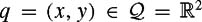

|
| |||||||||||||
|
|
||
In our introduction to configuration space above, we restricted our attention to two-dimensional configuration spaces that are easy to visualize. For each example, it was fairly straightforward to conclude that there were only two degrees of freedom: for a translating robot, the configuration was specified by a point in the familiar Euclidean plane, while for the two-joint arm the two joint angles gave a complete specification of the arm's position. In this section we determine the number of degrees of freedom of more complex systems by considering constraints on the motions of individual points of the systems.
As a first example, suppose the robot is a point that can move in the plane. The configuration can be given by two coordinates, typically , once we have chosen a reference coordinate frame fixed somewhere in space. Thus the robot has two degrees of freedom; the configuration space is two-dimensional.
Now consider a system consisting of three point robots, A, B, and C, that are free to move in the plane. Since the points can move independently, in order to specify the configuration of the system we need to specify the configuration of each of A, B, and C.By simply generalizing the case for a single point, we see that a configuration for this system can be given by the six coordinates xA, yA, xB, yB, xC, and yC (assuming that the points can overlap). The system has six degrees of freedom, and in this case we have .
Real robots are typically modeled as a set of rigid bodies connected by joints (or a single rigid body for the case of most mobile robots), not a set of points that are free to move independently. So, suppose now that the robot is a planar rigid body that can both translate and rotate in the plane. Define A, B, and C to be three distinct points that are fixed to the body. To place the body in the plane, we are first free to choose the position of A by choosing its coordinates (xA, yA). Now we wish to choose the coordinates of B,(xB, yB), but the rigidity of the body requires that this point maintain a constant distance d( A, B) from A:
This equation constrains B to lie somewhere on a circle of radius d( A, B) centered at (xA, yA), and our only freedom in placing B is the angle θ from A to B.
Now when we try to choose coordinates (xC, yC) for C,we see that our choice is subject to two constraints:
In other words, C has already been placed for us. In fact, every point on the body has been placed once we have chosen (xA, yA, θ), making this a good representation of the configuration. The body has three degrees of freedom, and its configuration space is  .
.
Each of the distance constraints above is an example of a holonomic constraint. A holonomic constraint is one that can be expressed purely as a function g of the configuration variables (and possibly time), i.e., of the form
Each linearly independent holonomic constraint on a system reduces the dimension of the system's configuration space by one. Thus a system described by n coordinates subject to m independent holonomic constraints has an (n − m)-dimensional configuration space. In this case, we normally attempt to represent the configuration space by a smaller set of n − m coordinates subject to no constraints, e.g., the coordinates (xA, yA, θ) for the planar body above.
Nonholonomic constraints are velocity constraints of the form
which do not reduce the dimension of the configuration space. Nonholonomic constraints are left to chapter 12.
We can apply the counting method above to determine the number of degrees of freedom of a three-dimensional rigid body. Choose three noncollinear points on the body, A, B, C. The coordinates (xA, yA, zA)of point A are first chosen arbitrarily. After fixing A, the distance constraint from A forces B to lie on the two-dimensional surface of a sphere centered at A. After both A and B are fixed, the distance constraints from A and B force C to lie on a one-dimensional circle about the axis formed by A and B. Once this point is chosen, all other points on the body are fixed. Thus the configuration of a rigid body in space can be described by nine coordinates subject to three constraints, yielding a six-dimensional configuration space.
We have already seen that a rigid body moving in a plane has three degrees of freedom, but we can arrive at this same conclusion if we imagine a spatial rigid body with six degrees of freedom with a set of constraints that restricts it to a plane. Choose this book as an example, using three corners of the back cover as points A, B and C. The book can be confined to a plane (e.g., the plane of a tabletop) using the three holonomic constraints
The two-joint planar arm can be shown to have two degrees of freedom by this (somewhat indirect) counting method. Each of the two links can be thought of as a rigid spatial body with six degrees of freedom. Six constraints restrict the bodies to a plane (three for each link), two constraints restrict a point on the first link (the first joint) to be at a fixed location in the plane, and once the angle of the first link is chosen, two constraints restrict a point on the second link (the second joint) to be at afixed location. Therefore we have (12 coordinates) − (10 constraints) = 2degrees of freedom.
Of course we usually count the degrees of freedom of an open-chain jointed robot, also known as a serial mechanism, by adding the degrees of freedom at each joint. Common joints with one degree of freedom are revolute (R) joints, joints which rotate about an axis, and prismatic (P) joints, joints which allow translational motion along an axis. Our two-joint robot is sometimes called an RR or 2R robot, indicating that both joints are revolute. An RP robot, on the other hand, has a revolute joint followed by a prismatic joint. Another common joint is a spherical (ball-and-socket) joint, which has three degrees of freedom.
A closed-chain robot, also known as a parallel mechanism, is one where the links form one or more closed loops. If the mechanism has k links, then one is designated as a stationary "ground" link, and k − 1 links are movable. To determine the number of degrees of freedom, note that each movable link has N degrees of freedom, where N = 6 for a spatial mechanism and N = 3 for a planar mechanism. Therefore the system has N (k − 1) degrees of freedom before the joints are taken into account. Now each of the n joints between the links places N − fi constraints on the feasible motions of the links, where fi is the number of degrees of freedom at joint i (e.g., fi = 1 for a revolute joint, and fi = 3 for a spherical joint). Therefore, the mobility M of the mechanism, or its number of degrees of freedom, is given by
| (3.1) |
|
This is known as Grübler's formula for closed chains, and it is only valid if the constraints due to the joints are independent. In the planar mechanism of figure 3.9, there are seven joints, each with one degree of freedom, and six links, yielding a mobility of 3(6 − 7 − 1) + 7 = 1.
As an application of the ideas in this section, determine the number of degrees of freedom of your arm by adding the degrees of freedom at your shoulder, elbow, and wrist. To test your answer, place your palm flat down on a table with your elbow bent. Without moving your torso or your palm, you should find that it is still possible to move your arm. This internal freedom means that your arm is redundant with respect to the task of positioning your hand (or a rigid body grasped by your hand) in space; an infinity of arm configurations puts your hand in the same place.[4] How many internal degrees of freedom do you have? How many holonomic constraints were placed on your arm's configuration when you fixed your hand's position and orientation? The sum of the number of constraints and internal degrees of freedom is the number of degrees of freedom of your (unconstrained) arm, and you should find that your arm has more than six degrees of freedom. A robot is said to be hyper-redundant with respect to a task if it has many more degrees of freedom than required for the task. (There is no strict definition of "many" here.)
[4]Provided your arm is away from its joint limits.
|
|
||
|